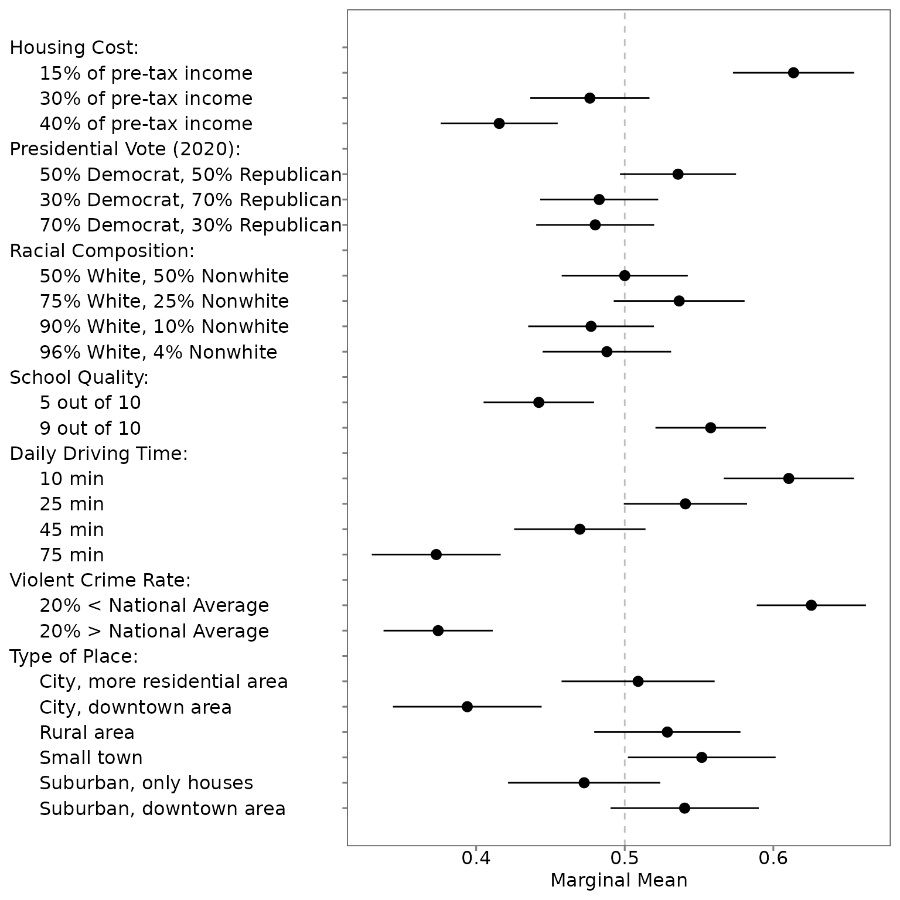
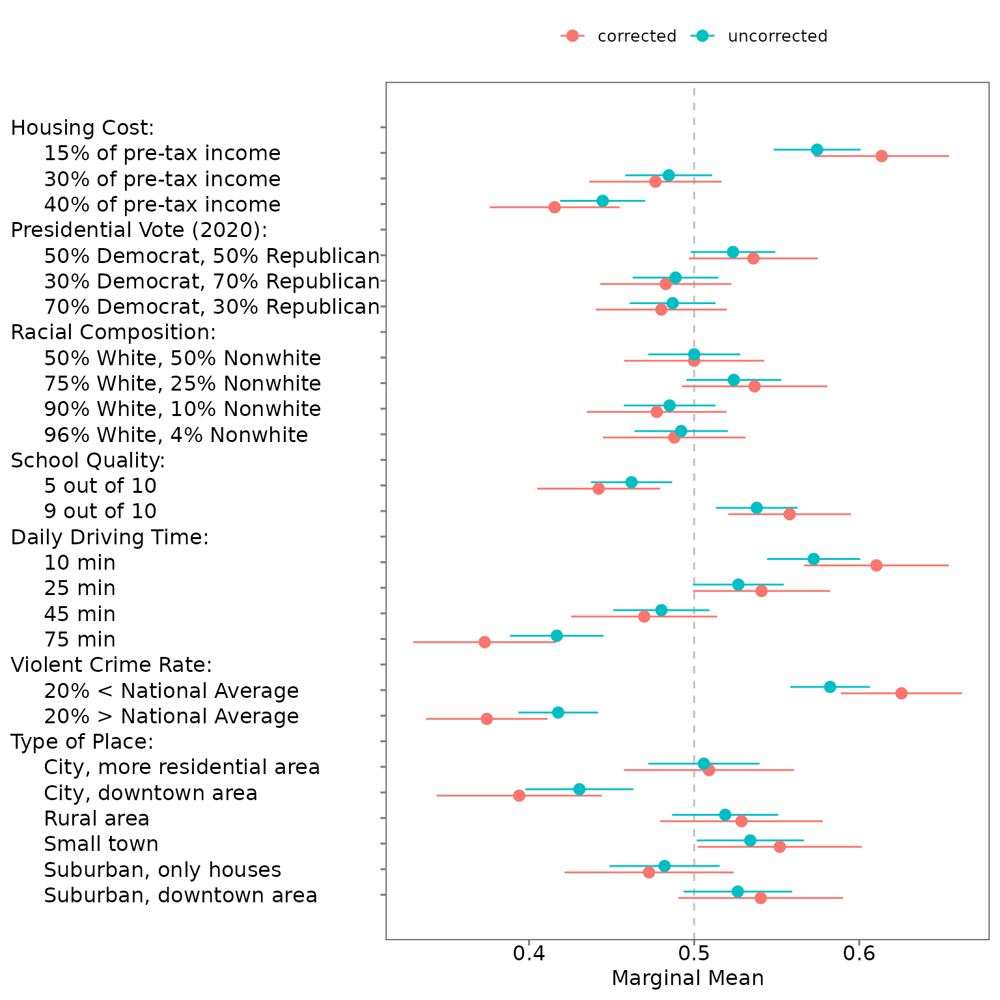
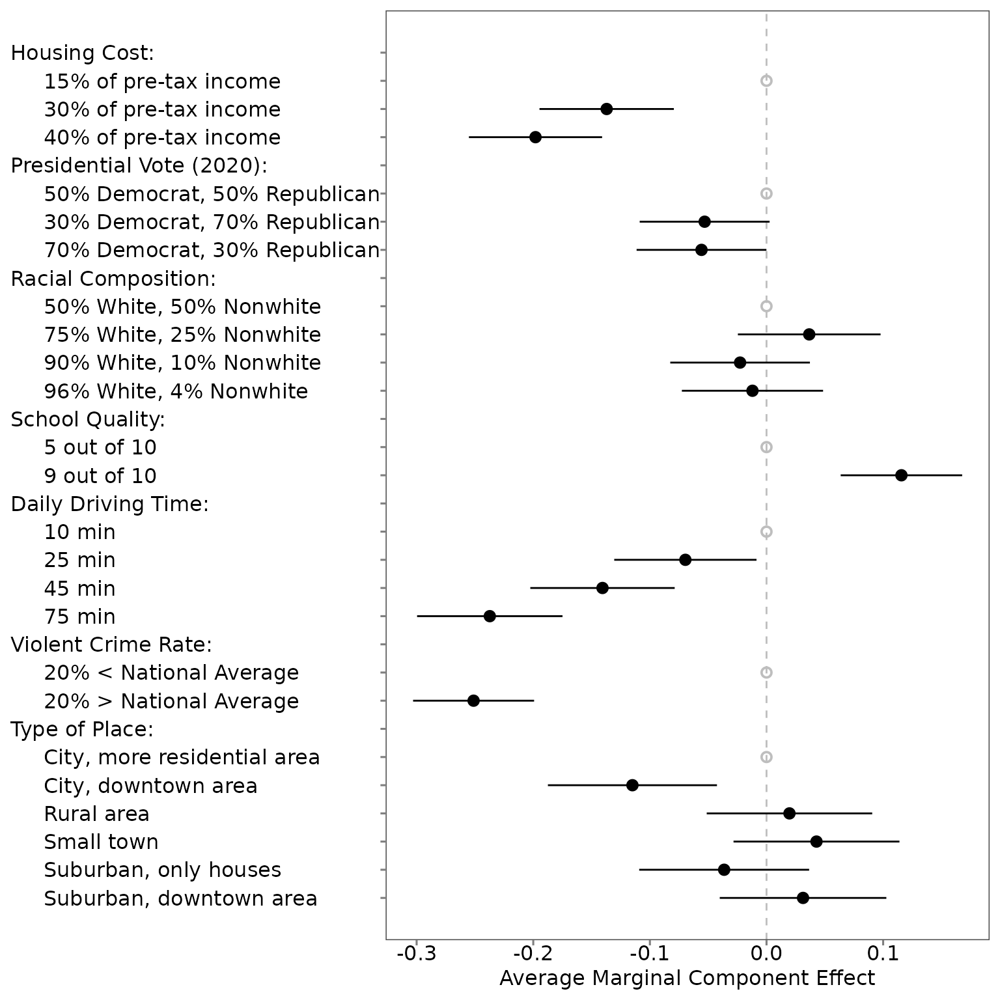
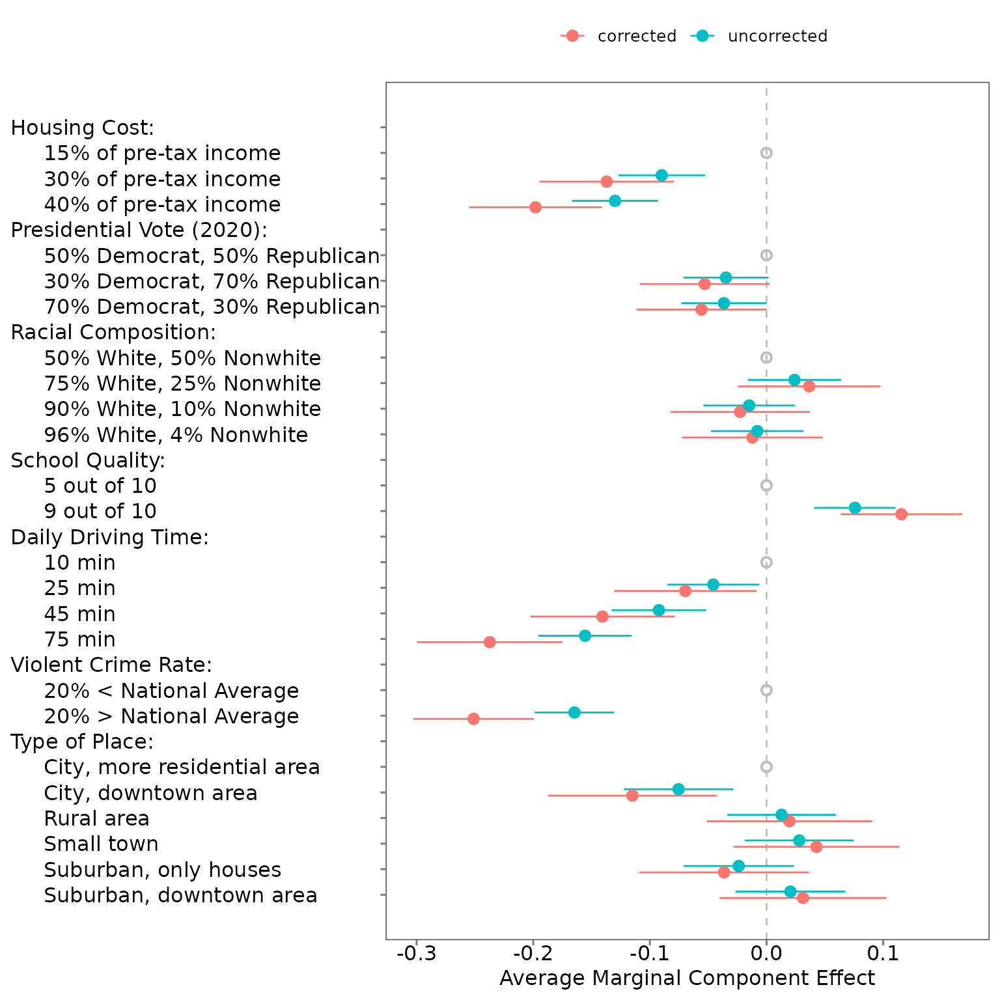

05. Visualize MMs or AMCEs
05-visualize.RmdThe projoint package features a set of tools for
producing publication-ready figures from conjoint analyses.
5.2 Profile-level analysis
Visualize MMs and AMCEs
By default, most researchers should prefer to view the corrected estimates of either MMs or AMCEs. Researchers can, however, choose to instead visualize the uncorrected estimates, or to view both together.
plot(mm)
plot(mm, .estimates = "uncorrected")
plot(mm, .estimates = "both")
plot(amce, .estimand = "amce")
plot(amce, .estimand = "amce", .estimates = "uncorrected")
plot(amce, .estimand = "amce", .estimates = "both")